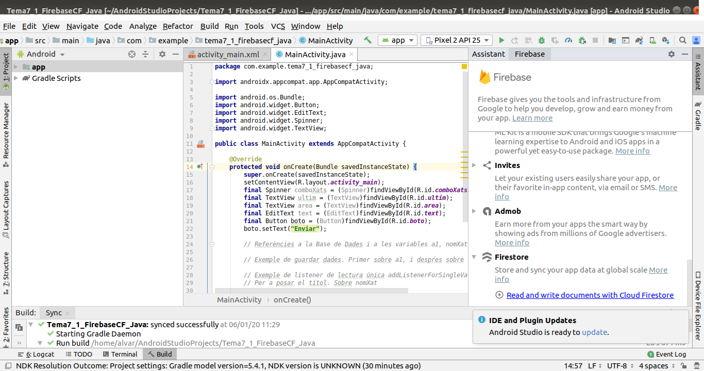
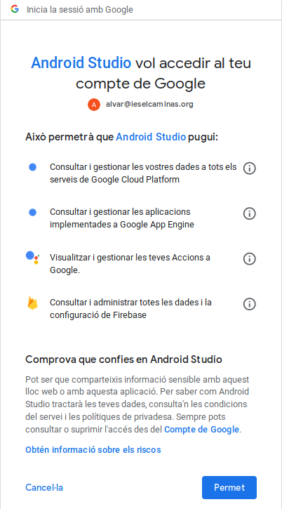
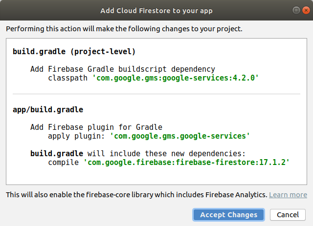
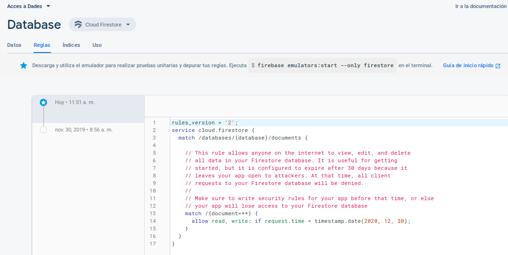
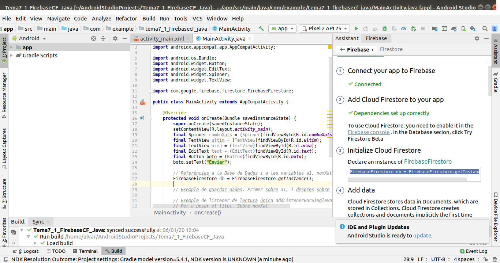

2.3.3.1 CF-Android: Connexió
L'accés és extraordinàriament fàcil gràcies als assistents que ens proporciona el propi Android Studio.
Al final de tot teniu un vídeo que repassa tots els passos per a poder connectar des de la nostra aplicació d'Android. A continuació els repassem i expliquem un a un. Són els que ens marca l'assistent, que haurem d'invocar sobre el nostre projecte ja creat, i que es crida des de Tools --> Firebase --> Firestore (està al final de tot)

Observeu que quasi quasi tot és idèntic, encara que utilitzem Java o Kotlin. Només farem la diferenciació en l'exemple, on estarà ja tot el codi.
Connectar l'aplicació a Firebase Cloud Firestore

En apretar el botó de Connect to Firebase, si no estàvem connectats amb el compte de Google al Firebase se'ns obrirà finestra d'un navegador per a connectar. Podria donar-se el cas que ens diguera que Android Studio vol accedir a les dades de la Base de Dades. Òbviament ho haurem de permetre:

Una vegada autenticats en Firebase, des de l'entorn d'Android Studio ens ofereix la possibilitat de crear una aplicació nova (una Base de Dades nova) o utilitzar alguna de les que ja tenim. Utilitzarem la que ens ha servit de prova fins el moment:

Quan haja connectat substituirà el botó Connect to Firebase, per una etiqueta que dirà connected, en verd.
Afegir la Base de Dades a la nostra aplicació
En aquest segon pas, quan apretem el botó Add Cloud Firestore to your app, ens dirà els canvis que farà per a incorporar les coses necessàries per a poder connectar.

Com veieu es tracta d'incorporar les llibreries necessàries de Firebase. En el vídeo del final es mostren imatges amb les dades incorporades.
Igual que abans, substituirà el botó Add the Realtime Database in your app, per una etiqueta que dirà Dependencies set up correctly, en verd. És una bona guia per saber en quin punt estem.
Permetre l'accés als usuaris, si es precís canviant les regles d'accés a la Base de Dades
Com que Runtime Database i Cloud Firestore, encara que sembla que estan compartint la Base de Dades, en realitat no es pot accedir d'una a l'altra, igual ens passarà amb les regles d'accés (Rules). Per tant és convenient pegar-li una miradeta. Recordeu que és des de la consola de Firebase, entrant al Cloud Firestore, i anant a la pestanya Rules

Observeu que en aquest exemple he posat que es pot connectar qualsevol fins al 30-12-2020. Inicialment dóna un mes, però si no voleu tenir problemes, ho podeu allargar canviant la data.
Copiar les sentències per a escriure i per a llegir (millor dit per a detectar els canvis en temps real)
Ens diu un exemple de les sentències a copiar per a poder poder fer referència a la Base de Dades, per a guardar una informació a la Base de Dades i també per a detectar un canvi en la Base de Dades i poder obtenir el nou valor. Encara que tinguem un projecte en Kotlin, les sentències d'exemple seran de Java, però que en copiar-les les traduiria a Kotlin. No fem diferenciació per tant entre Java i Kotlin en aquest moment.
